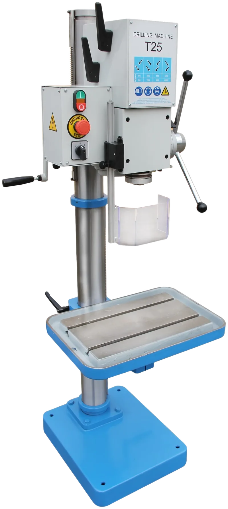

T-25 – T-40 gear-head drill presses, 1″ to 1-9/16″ in steel
T-25 / T-25A – T-40 · 14 models


1 / 9


Gear-head drill presses for the fabrication and maintenance shop: eight spindle speeds through a gearbox — no belts to move — from 1″ (25 mm) in steel on the T-25 to 1-9/16″ (40 mm) on the T-40. Floor and bench models; the drilling head and table move up and down and the table swivels; the T-28, T-32, T-35 and T-40 add a mechanical or electric power feed; the C models a 24 V control and a spindle guard with micro-switch. Tapping is an option on most models.
- Drilling capacity 1 – 1-9/16″ (25 – 40 mm) in steel; MT3 or MT4 spindle
- 8 spindle speeds, about 90 – 3,600 rpm at 60 Hz
- Power feed 0.004 – 0.013″/rev on the T-28, T-32, T-35, T-40
- Two-speed motors 0.9 – 2.4 HP; 3 HP on the T-40
- Safety spindle guard; C models with 24 V control and guard micro-switch; T-25C-H with depth readout
| Model | T-25 / T-25A | T-25C / T-25AC | T-25C-H | T-26 | T-26C / T-26AC | T-25B / T-25BC | T-26B / T-26BC |
|---|---|---|---|---|---|---|---|
| Drilling capacity in steel | 1″ (25 mm) | 1″ (25 mm) | 1″ (25 mm) | 1″ (26 mm) | 1″ (26 mm) | 1″ (25 mm) | 1″ (26 mm) |
| Tapping capacity, steel / cast iron | M10 / M16 (optional tapping) | M10 / M16 (optional tapping) | M10 / M16 (optional tapping) | M10 / M16 (optional tapping) | M10 / M16 (optional tapping) | M10 / M16 (optional tapping) | M10 / M16 (optional tapping) |
| Spindle taper | MT3 | MT3 | MT3 | MT3 | MT3 | MT3 | MT3 |
| Spindle travel | 4-7/8″ (125 mm) | 4-7/8″ (125 mm) | 4-7/8″ (125 mm) | 4-7/8″ (125 mm) | 4-7/8″ (125 mm) | 4-7/8″ (125 mm) | 4-7/8″ (125 mm) |
| Spindle speeds | 8 speeds, 130 – 3,200 rpm at 60 Hz (105 – 2,900 rpm at 50 Hz) | 8 speeds, 130 – 3,200 rpm at 60 Hz (105 – 2,900 rpm at 50 Hz) | 8 speeds, 130 – 3,200 rpm at 60 Hz (105 – 2,900 rpm at 50 Hz) | 8 speeds, 130 – 3,200 rpm at 60 Hz (105 – 2,900 rpm at 50 Hz) | 8 speeds, 130 – 3,200 rpm at 60 Hz (105 – 2,900 rpm at 50 Hz) | 8 speeds, 130 – 3,200 rpm at 60 Hz (105 – 2,900 rpm at 50 Hz) | 8 speeds, 130 – 3,200 rpm at 60 Hz (105 – 2,900 rpm at 50 Hz) |
| Motor | 0.9 / 1.2 HP (0.65 / 0.9 kW), two-speed | 0.9 / 1.2 HP (0.65 / 0.9 kW), two-speed | 0.9 / 1.2 HP (0.65 / 0.9 kW), two-speed | 1.2 / 1.5 HP (0.9 / 1.1 kW), two-speed | 1.2 / 1.5 HP (0.9 / 1.1 kW), two-speed | 0.9 / 1.2 HP (0.65 / 0.9 kW), two-speed | 1.2 / 1.5 HP (0.9 / 1.1 kW), two-speed |
| Controls | Standard (A: frame with scale for down feed) | 24 V control, spindle guard micro-switch | 24 V control, depth readout | Standard | 24 V control, spindle guard micro-switch | Bench model (BC: 24 V control) | Bench model (BC: 24 V control) |
| Mounting | Floor | Floor | Floor | Floor | Floor | Bench | Bench |
| Packing size L × W × H | 66 × 22 × 28″ (167 × 56 × 72 cm) | 66 × 22 × 28″ (167 × 57 × 72 cm) | 66 × 22 × 28″ (167 × 57 × 72 cm) | 66 × 22 × 28″ (167 × 56 × 72 cm) | 66 × 22 × 28″ (167 × 57 × 72 cm) | 37 × 19 × 29″ (94 × 48 × 73 cm) | 37 × 19 × 29″ (94 × 48 × 73 cm) |
| Weight | 419 lb (190 kg) | 419 lb (190 kg) | 463 lb (210 kg) | 423 lb (192 kg) | 423 lb (192 kg) | 300 lb (136 kg) | 304 lb (138 kg) |
| Model | T-28 | T-28B | T-30 | T-30B | T-32 | T-35 | T-40 |
|---|---|---|---|---|---|---|---|
| Drilling capacity in steel | 1-1/8″ (28 mm) | 1-1/8″ (28 mm) | 1-3/16″ (30 mm) | 1-3/16″ (30 mm) | 1-1/4″ (32 mm) | 1-3/8″ (35 mm) | 1-9/16″ (40 mm) |
| Tapping capacity, steel / cast iron | M12 / M16 | M12 / M16 | M12 / M16 | M12 / M16 | M12 / M16 | M14 / M18 | M18 / M22 |
| Spindle taper | MT3 | MT3 | MT3 | MT3 | MT4 | MT4 | MT4 |
| Spindle travel | 5-7/8″ (150 mm) | 5-7/8″ (150 mm) | 5-7/8″ (150 mm) | 5-7/8″ (150 mm) | 5-7/8″ (150 mm) | 5-7/8″ (150 mm) | 7-1/2″ (190 mm) |
| Spindle speeds | 8 speeds, 90 – 3,610 rpm at 60 Hz (75 – 3,010 rpm at 50 Hz) | 8 speeds, 90 – 3,610 rpm at 60 Hz (75 – 3,010 rpm at 50 Hz) | 8 speeds, 90 – 3,610 rpm at 60 Hz (75 – 3,010 rpm at 50 Hz) | 8 speeds, 90 – 3,610 rpm at 60 Hz (75 – 3,010 rpm at 50 Hz) | 8 speeds, 90 – 3,610 rpm at 60 Hz (75 – 3,010 rpm at 50 Hz) | 8 speeds, 90 – 3,610 rpm at 60 Hz (75 – 3,010 rpm at 50 Hz) | 8 speeds, 108 – 1,800 rpm at 60 Hz (90 – 1,500 rpm at 50 Hz) |
| Feed | Mechanical, 0.004 – 0.013″/rev (0.1 – 0.33 mm/rev) | Mechanical, 0.004 – 0.013″/rev (0.1 – 0.33 mm/rev) | Manual | Manual | Electric, 0.004 – 0.013″/rev (0.1 – 0.33 mm/rev) | Electric, 0.004 – 0.013″/rev (0.1 – 0.33 mm/rev) | Mechanical, 0.004 – 0.013″/rev (0.1 – 0.33 mm/rev) |
| Table | Rectangular | Rectangular (bench) | Round | Round (bench) | Round, rotary | Rectangular | Rectangular |
| Motor | 1.2 / 1.6 HP (0.9 / 1.2 kW), two-speed | 1.2 / 1.6 HP (0.9 / 1.2 kW), two-speed | 1.5 / 1.7 HP (1.1 / 1.3 kW), two-speed | 1.5 / 1.7 HP (1.1 / 1.3 kW), two-speed | 1.7 / 2 HP (1.3 / 1.5 kW), two-speed | 2 / 2.4 HP (1.5 / 1.8 kW), two-speed | 3 HP (2.2 kW) |
| Packing size L × W × H | 69 × 26 × 35″ (174 × 67 × 88 cm) | 29 × 19 × 46″ (74 × 48 × 118 cm) | 69 × 26 × 35″ (174 × 67 × 88 cm) | 29 × 19 × 53″ (74 × 48 × 135 cm) | 69 × 26 × 35″ (174 × 67 × 88 cm) | 69 × 26 × 35″ (174 × 67 × 88 cm) | 85 × 22 × 37″ (217 × 57 × 93 cm) |
| Weight | 584 lb (265 kg) | 430 lb (195 kg) | 562 lb (255 kg) | 441 lb (200 kg) | 650 lb (295 kg) | 677 lb (307 kg) | 761 lb (345 kg) |
Metric values in brackets are the manufacturer's figures; thin sheet is given in gauge. Packing size is the shipping crate L × W × H and weight is the net weight of the machine. Three-phase machines are supplied for 600 V; 208 V, 240 V or 480 V 3-phase available on request.